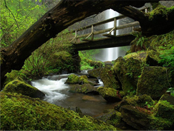

O Turismo

Localizado próximo à cachoeiraa Ága Branca, temos permição paraultilizarmos a trilha existente na área,
temos um guia contratado e exclusivo, que leva nossos visitantes para conhecer as belezasa da natureza.
A saída para este passeio ocorre diariamente às 8:30, após o café damanhã principal, tendo como horário
para rotorno às 18:30, o almoço será servido pela cozinha especial que temos beira a cachoeira.
Os pratos servidos neste local são "surpresa", a cada dia nossas cozinheiras preparam algo diferente, peguem suas coisas
e entrem nessa aventura!